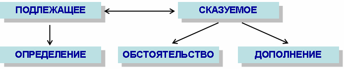
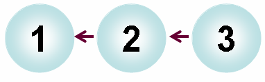
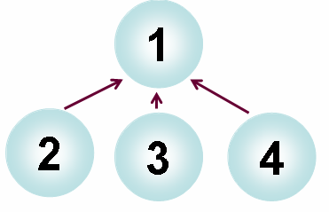

Текст - это сочетание предложений, связанных по смыслу и грамматически.
Основные средства связи предложений в тексте - порядок слов в предложении, порядок предложений, интонация.
|
Текст - это сочетание предложений, связанных по смыслу и грамматически. Основные средства связи предложений в тексте - порядок слов в предложении, порядок предложений, интонация. |
 |
В русском языке каждый член предложения имеет своё определённое место. Подлежащее обычно стоит перед сказуемым, определение – перед определяемым словом, обстоятельство – перед сказуемым, а дополнение – после него. Такой порядок слов называется прямым. |

Белеет парус одинокий в тумане моря голубом. (М. Лермонтов) |
 |
Одинокий парус белеет в голубом тумане моря. |
|
В тексте предложения могут быть связаны по смыслу последовательно: второе с первым, третье со вторым и т.д. Такая связь называется цепной. |
 |
 |
Завтра у нас будет контрольная работа по математике. Я решил как можно тщательнее подготовиться, чтобы получить хорошую оценку. Подготовку к контрольной работе я начал с разбора задач, которые мы решали в классе на уроках. После этого я попробовал решить несколько задач самостоятельно. Одна из них оказалась настолько трудной, что мне пришлось обратиться за помошью к моему другу Аскару. Вместе с ним мы справились с решением. Надеюсь, завтра меня ждет хорошая оценка! |
|
Иногда все предложения, начиная со второго, грамматически связаны с первыми. Они как бы конкретизируют его смысл. Такая связь называется параллельной. |
 |
|
Вчера мы всем классом ходили в поход. Погода стояла теплая, солнечная. Мы расположились в лесу около речки. Весь день мы загорали, играли в подвижные игры. Девочки сварили на костре вкусную кашу. День прошел просто великолепно! |
|
Слова в предложении связываются грамматически. Особую роль в этом играют глаголы, наречия, местоимения. |
|
местоимения 3 лица ед. числа выступают в роли связующих слов |
 |
Призыв об охране природы должен быть обращён прежде всего к молодёжи. Ей жить и хозяйствовать на этой земле, ей и украшать её. |
|
указательные местоимения усиливают связь предложений в тексте | |
9 Мая – День Победы. Этот день мы будем помнить всегда. |
|
К тексту можно составить план. Он может быть простым и сложным. Сложный план отличается от простого тем, что отдельные его пункты включают в себя подпункты (т.е. заголовки более мелких частей). Работая над сложным планом, мы учимся обобщать материал, систематизировать его. |